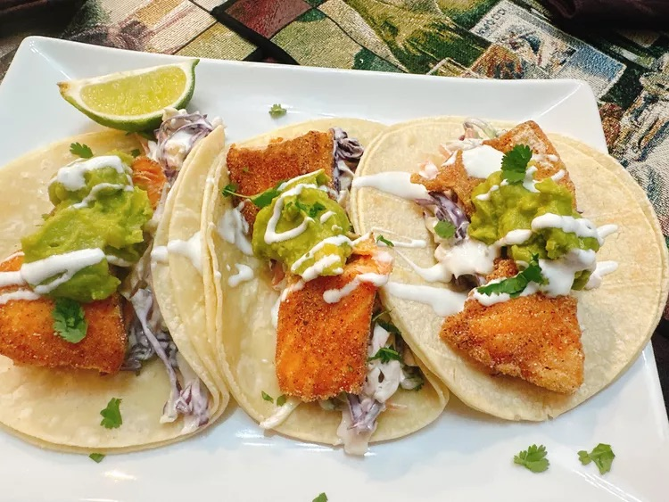

Trout Tacos

Ingredients
- 16 white corn tortillas
- 1/2 pound purple cabbage, thinly sliced
- 2 green onions, sliced, green and white parts separated
- 1/2 pound coleslaw mix
- 3 tablespoons Mexican cream, plus more for serving
- 1 teaspoon lime zest, or more to taste
- lime wedges as needed, divided
- 2 tablespoons cilantro leaves, or to taste
- salt and freshly ground black pepper
- 4 trout filets
- 3 tablespoons plus 1 teaspoon tapioca starch
- 1 tablespoon ground cumin
- 2 teaspoons chipotle powder
- 1 teaspoon Mexican oregano
- 3 tablespoons vegetable oil for frying, or as needed
- 1/2 cup prepared guacamole, or as needed for serving
Steps
- Preheat the oven to 400 degrees F (200 degrees C). Wrap tortillas in foil.
- Bake tortillas in the preheated oven until warm, 8 to 10 minutes.
- Meanwhile, place cabbage, white parts of green onion, coleslaw mix, 3 tablespoons Mexican cream, lime zest, juice of 2 lime wedges, and cilantro in a large bowl. Toss to coat; season with salt and pepper. Set aside..
- Carefully remove skin from trout. Cut each trout filet into 2- to 3-inch pieces. Stir tapioca starch, cumin, chipotle powder, and Mexican oregano together in a shallow bowl.
- Dip fish pieces into seasoning mixture to coat.
- Heat oil in a large skillet over medium-high heat until hot. Add coated fish pieces; cook until golden brown and fish flakes easily with a fork, 2 to 3 minutes per side. Transfer to a drip tray, and season with salt.
- Using 2 corn tortillas for each taco, divide fish, slaw, and guacamole between the tacos. Garnish each with green tops of scallions. Serve with remaining lime wedges and creams on the side. Enjoy!